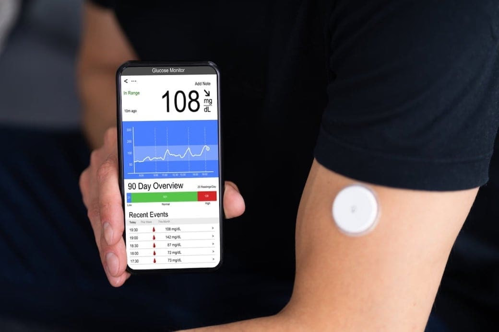
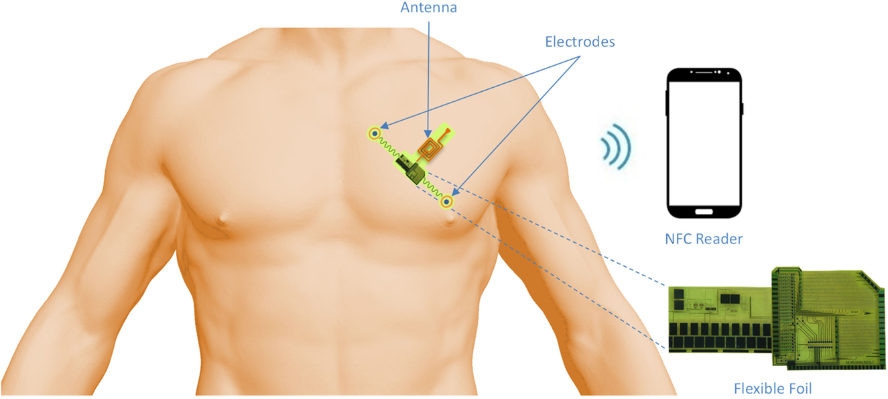
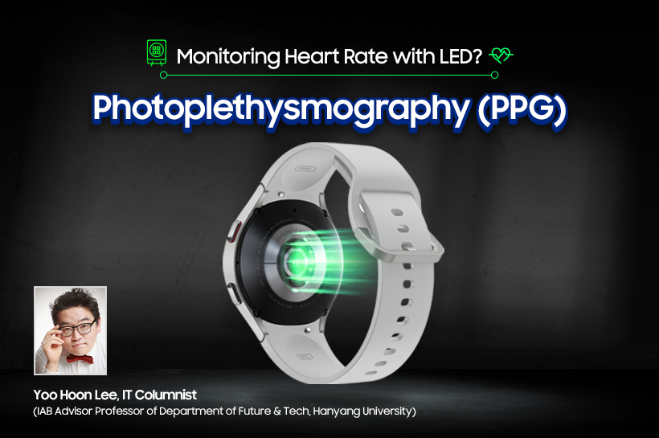
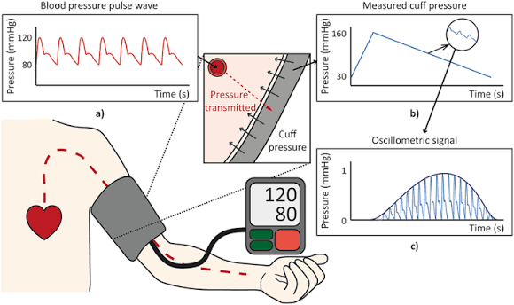

Patient Information
| Name | Bekarys Abdulkarim |
|---|---|
| Patient ID | VM-20841 |
| Age | 52 |
| Condition | Metabolic syndrome |
| Assigned physician | Dr. A. Bekova |
| Last check-in | Today, 09:42 |
Alerts
A short log of recent readings — normal and abnormal.
-
Heart rate — 72 bpm 09:41
Within the target range of 60–100 bpm. No action needed.
-
Blood glucose — 210 mg/dL 08:15
Above the 180 mg/dL threshold. Attending physician notified automatically.
Patient Dashboard
Live values from the sensors currently attached to the patient.
Body Temperature
36.8°C
Blood Glucose
118mg/dL
Heart Rate
96bpm
Blood Pressure
128/84mmHg
ECG Rhythm
Sinusrhythm
Sensor Cards
The physical devices behind each reading above.
| Sensor | Reading | Unit | Status |
|---|---|---|---|
| Skin Thermistor T-1 | 36.8 | °C | Normal |
| CGM Patch G-2 | 118 | mg/dL | Normal |
| PPG Wrist Sensor H-3 | 96 | bpm | Warning |
| Oscillometric Cuff P-4 | 128/84 | mmHg | Warning |
| 3-Lead ECG Patch E-5 | Sinus | rhythm | Normal |
Sensor Gallery

LIVE


Metabolic Syndrome & IoT Monitoring
What is metabolic syndrome?
Metabolic syndrome is a cluster of conditions — high blood pressure, high blood sugar, excess abdominal fat and abnormal cholesterol — that occur together and raise the risk of heart disease, stroke and type 2 diabetes. Because most of these conditions have no obvious symptoms on their own, patients often need regular measurement rather than a single test to catch the pattern early.
IoT-based patient monitoring
An IoT monitoring system replaces occasional clinic visits with small wearable or bedside sensors that measure a patient's vitals continuously and send the readings to a doctor automatically. This is especially useful for metabolic syndrome, where the important warning signs — a slow rise in glucose, a change in resting heart rate — only show up over days or weeks, not in a single appointment.
Monitored physiological parameters
- Blood glucose level
- Heart rate and ECG rhythm
- Blood pressure (systolic / diastolic)
- Body temperature
- Blood oxygen saturation (SpO2)
Medical sensors and devices
The dashboard above is fed by five device types: a continuous glucose monitor (CGM) patch, a photoplethysmography (PPG) wrist sensor for heart rate and SpO2, an oscillometric blood pressure cuff, a skin thermistor, and an adhesive 3-lead ECG patch. Each device pairs with the patient's IoT hub over Bluetooth Low Energy.
Data transmission
Each sensor sends small, encrypted readings over Bluetooth to the patient's IoT hub, which forwards them over Wi-Fi or the mobile network to a cloud server. The server timestamps and stores every reading, checks it against the patient's normal range, and pushes an alert to the care team the moment a value crosses a threshold — as seen in the Alerts section above.
Benefits of continuous monitoring
Continuous monitoring catches dangerous trends — like the glucose spike flagged in the Alerts section — hours or days before a scheduled appointment would. It also reduces unnecessary clinic visits for stable patients, gives doctors a full history instead of a single snapshot, and lets patients manage a chronic condition from home with confidence that a real problem will still be caught quickly.
How the IoT Monitoring System Works
The path one reading takes from the patient's body to the doctor's screen.
Sensors
Wearable patches and cuffs measure glucose, heart rate, pressure and temperature.
IoT Device
A bedside hub collects readings from every sensor over Bluetooth.
Data Transmission
The hub sends encrypted readings over Wi-Fi or mobile network.
Cloud / Server
Readings are stored, timestamped and checked against safe ranges.
Doctor / Patient
Both see the dashboard live and get notified the moment something is abnormal.
Media
Sample media a device or clinician would use during a check-up.
Device connection chime (demo audio)
Explainer clip (demo video)
Resources
About DenSaulyq
DenSaulyq links wearable and bedside IoT sensors to track the vitals that matter most for metabolic syndrome and brings every reading into one screen for patients and their care team — so the people caring for a patient see what changed, not just numbers.